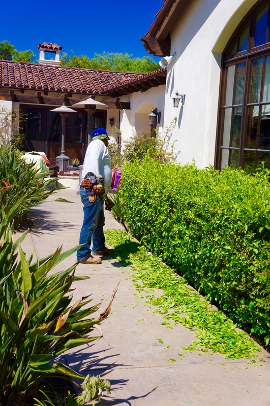

Rancho Santa Fe Landscaping Services
Estate-Scale Landscaping for Rancho Santa Fe Properties
Rancho Santa Fe is not a typical suburb. It is one of the wealthiest and most deliberately preserved communities in the country, where two-acre minimums are common and many properties stretch well beyond that. The rolling hills, eucalyptus groves, and open sky that define this community were set in motion nearly a century ago when the Santa Fe Land Improvement Company planted those original trees. Today, that legacy of intentional design runs through everything here -- including the landscapes that surround each estate.
Working in Rancho Santa Fe means working within The Covenant, the architectural review body that governs the original community. The Art Jury reviews all exterior modifications, and landscaping is no exception. Plans must demonstrate that new plantings and hardscape complement the rural, agrarian character that makes Rancho Santa Fe distinct from the gated communities that surround it. We have navigated the Art Jury approval process on multiple projects and understand what gets approved: naturalistic grading, earth-toned materials, native and Mediterranean species arranged in organic groupings rather than rigid, manicured rows. Our designs respect the character guidelines while still delivering modern outdoor living spaces that work for the way families actually use their properties.
The scale of Rancho Santa Fe properties demands a different approach to landscape design. A quarter-acre backyard in Del Mar needs one plan. A four-acre estate with a motor court, guest house, pool pavilion, equestrian facilities, and perimeter groves needs a master plan. We break large properties into distinct zones -- arrival sequence, primary outdoor living, recreation, service areas, and perimeter -- and design each zone with its own purpose while maintaining a unified aesthetic across the entire property. Specimen trees like mature olive, coast live oak, and Canary Island date palms anchor the design and provide the vertical scale that these properties require. These are not trees you buy at a nursery. We source from specialty growers and coordinate crane installations for box specimens that deliver immediate presence.
Fire is the defining reality of inland Rancho Santa Fe. The community sits in a CalFire-designated Very High Fire Hazard Severity Zone, and the devastating 2003 and 2007 wildfires are still fresh in the memory of long-time residents. Every landscape we design here starts with defensible space. That means 100 feet of managed vegetation around all structures, with the first 30 feet kept lean -- low-growing, fire-resistant species like lavender, rosemary, aloe, and rockrose separated by gravel or stone hardscape. Beyond that zone, we thin native vegetation, remove dead wood, and create fuel breaks using pathways and irrigated plantings that slow fire spread. This is not optional. It is the baseline that every design builds from.
Equestrian properties are a significant part of our work in Rancho Santa Fe. Many estates maintain paddocks, riding arenas, barn structures, and trail access. Landscaping around equestrian facilities involves species selection that avoids toxic plants -- oleander, red maple, and certain species of nightshade are all common in Southern California landscaping but dangerous to horses. We design paddock perimeters with safe, sturdy fencing plantings like pittosporum and xylosma, install dust-control groundcovers in high-traffic areas, and create separation between equestrian zones and residential gardens using hedgerows and grade changes.
The Bridges and The Crosby are two of the most prominent gated communities within the greater Rancho Santa Fe area, each with their own HOA requirements layered on top of general community standards. We have completed projects in both communities and understand the specific material palettes, setback requirements, and landscape ratios each HOA enforces. The Crosby properties in particular tend toward a California-Mediterranean style with extensive stone work, mature specimen plantings, and integrated outdoor living spaces that flow naturally from interior rooms. The Bridges leans slightly more contemporary, with clean hardscape lines and structured planting beds.
Privacy screening is essential on Rancho Santa Fe estates, but it must look intentional rather than defensive. We design layered screens using a mix of evergreen trees like podocarpus and ficus nitida at the back, mid-story shrubs like photinia and ligustrum in the middle, and lower plantings like pittosporum and Indian hawthorn at the front. The result is a living wall that blocks sightlines from neighboring properties and roads while appearing as a natural part of the landscape rather than a planted barrier.
Landscaping Services in Rancho Santa Fe
Landscape Design
Master plans for multi-acre estates, phased implementation, and Art Jury-ready presentations for Covenant approval.
New Construction
Complete landscape installation for new estate builds, from grading and drainage infrastructure to final specimen plantings.
Hardscape
Natural stone walls, flagstone terraces, motor courts, and structural elements built for estate-scale properties.
Water Features
Custom fountains, natural stream beds, koi ponds, and cascading water walls scaled to large estate settings.
BBQ Islands
Full outdoor kitchens with built-in grills, pizza ovens, and bar seating designed for Rancho Santa Fe entertaining.
Patios & Decks
Expansive covered patios, pergola structures, and elevated decks that extend estate living outdoors year-round.
Pavers
Natural stone, travertine, and interlocking paver installations for driveways, walkways, and pool surrounds.
Landscape Lighting
Low-voltage LED systems illuminating entry drives, garden paths, specimen trees, and architectural features after dark.
Planting
Fire-resistant, drought-adapted plantings with specimen tree sourcing and crane-set installations for immediate impact.
Irrigation
Centralized smart irrigation with dedicated zones, well integration, and weather-based controllers for large acreage.
Artificial Grass
Premium synthetic turf for play areas, putting greens, and pet zones -- water-free green space on estate properties.
Landscape Renovation
Refresh aging estate landscapes with updated plantings, improved fire resistance, and modern outdoor living features.
Why Arcadian for Rancho Santa Fe
Arcadian Landscape is based in Cardiff-by-the-Sea, minutes from Rancho Santa Fe via the San Elijo corridor. We have designed and built landscapes throughout The Covenant, The Bridges, The Crosby, and surrounding Rancho Santa Fe estates. We understand the Art Jury process, the fire codes, and the level of craftsmanship that property owners in this community expect.
Owner Evan Weisman oversees every Rancho Santa Fe project personally. Estate properties are complex -- they involve phased construction, coordination with architects and builders, specimen sourcing, and long-term maintenance planning. Evan manages that entire process from the initial site walk through final planting, ensuring every detail aligns with the approved design and the property's long-term vision.
Rancho Santa Fe Landscaping FAQ
What are The Covenant guidelines for landscaping in Rancho Santa Fe?
The Rancho Santa Fe Covenant requires that all exterior improvements, including landscaping, receive approval from the Art Jury before work begins. Guidelines emphasize preserving the community's rural, equestrian character -- that means naturalistic plantings, muted hardscape colors, and designs that blend with the surrounding terrain rather than standing apart from it. We have worked within Covenant restrictions on multiple projects and handle the submission process so approvals move smoothly.
What fire-resistant landscaping options work in Rancho Santa Fe?
Rancho Santa Fe sits in a high fire severity zone, and defensible space is not optional -- it is required. We design with fire-resistant species like lavender, sage, aloe, agave, rockrose, and certain native groundcovers that resist ignition. Hardscape buffers such as gravel zones, stone patios, and concrete pathways around structures create fuel breaks. We also space plantings to reduce fire ladder potential and keep tree canopies pruned away from rooflines. Every Rancho Santa Fe project we design factors in CalFire defensible space requirements from the start.
How do you approach landscaping for large estates in Rancho Santa Fe?
Estate-scale landscaping requires a phased approach. We start with a master plan that addresses the entire property -- entry drives, motor courts, primary living areas, pool surrounds, guest houses, and perimeter screening. From there, we phase construction based on priority and budget. Large properties also need centralized irrigation control, often with dedicated well or reclaimed water systems. We design for long-term growth, selecting specimen trees and structural plantings that will mature into the scale the property demands over five to ten years.
Transform Your Rancho Santa Fe Estate
Ready to create a landscape worthy of your Rancho Santa Fe property? Contact Arcadian Landscape for a free estate consultation.